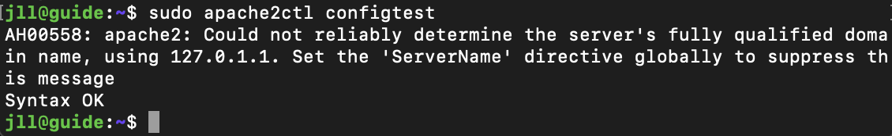

Ubuntu webserver guide
Jostein Leander Langmo, Bleiker VGS, 2ITB, Oktober 2022
Denne websiden viser hvordan man setter opp en VM, installerer Ubuntu og konfiguerer. Den viser også hvordan man installerer Apache og hoster en webside
Bilder og video kan klikkes på og bli forstørret
Opprette VM og installere Ubuntu Linux (64-bit)
Nedenfor er det en video om hvordan man oppretter VM og installerer Ubuntu 20.04. Definerer og velger norsk tastatur for Mac
Konfigurer IP-adresse
Nedenfor vises et bilde av en statisk IP-adresse på IPv4
Definere serverprofilen
Nedenfor er det et bilde av hvordan jeg satte opp min profil
SSH setup
Nedenfor viser bildet at du må installere Open SSH
Logg inn med brukernavn og passord som du definerte tidligere
SSH
Man bruker SSH for å få tilgang til serveren fra annnen maskin. SSH er forkortelsen for Secure Shell som er en nettverksprotokoll.
Tips bruker annen terminal for spaeialtegn, spesielt på Mac
Tilgjengeligjør SSH
Følgende kommando må skrives for å tilgjengeligjøre SSH
sudo ufw allow ssh
Følgende kommando slår på firewall
sudo ufw enable
Du kan så kjøre en status for å sjekke om porten er åpen
sudo ufw status
For å finne IP-adresse skriv følgende kommando
hostname -I
Åpner terminal vindu for så å få tilgang til serveren, og skriver følgende i terminal vinduet
ssh brukernavn@IP-adresse
Tips: Får du lignende feilmelding som nedenfor så må du slette filen som ligger i .../.ssh og som heter known_hosts (filen som den referer til i feilmeldingen)
Installere Apache2
Følgende gjøres for å installere Apache2
Først oppdatere pakkene, slik at du har de nyeste
sudo apt update
Installere apache2
sudo apt install apache2
Se liste over applikasjonsprofiler for firewall med komandoen
sudo ufw app list
Tilgjengeligjør Apache
sudo ufw allow 'Apache'
Sjekk status ved å bruke kommandoen
sudo ufw status
For å sjekke at webserveren kjører, bruk følgende kommando
sudo systemctl status apache2
Bildet under viser status
Åpne browser og skriver inn IP-adressen for å se at den fungerer
http://10.12.27.69
Da skal du få opp Ubuntu 22.04 webside
Sette opp Virtual host i Apache
Lage en katalog med samme navn som domene du vil bruke
sudo mkdir -p /var/www/jola.ikt-fag.no/html
Sett eierskap til katalogen med kommandoen
sudo chown -R $USER:$USER /var/www/jola.ikt-fag.no/html
Endre lese, skrive og kjøre rettigheter til katalogen
sudo chmod -R 755 /var/www/jola.ikt-fag.no
Lager en index.html for å teste ved hjelp av nano (editor)
nano /var/www/jola.ikt-fag.no/html/index.html
Skriv inn følgende som bildet under
Trykk CTRL+X og y og trykk ENTER
Lag en virtuell host file
For å lage en virtuell host file bruker jeg nano (editor)
sudo nano /etc/apache2/sites-available/jola.ikt-fag.no.conf
Skriv inn følgende som bildet under og lagre den

Bruker a2ensite for å tilgjengeligjøre host file
sudo a2ensite jola.ikt-fag.no.conf
For å skru av standard host file, brukes kommandoen
sudo a2dissite 000-default.conf
Sjekk filen for konfigurasjonsfeil
sudo apache2ctl configtest
Hvis du ikke får følgende feil som bildet under viser, kan du hoppe over punktene med servername.conf filen
Følg kommandoen under for å fikse det
sudo nano /etc/apache2/conf-available/servername.conf
Legg inn følgende linje og lagre filen
ServerName jola.ikt-fag.no
Så må følgende kommando kjøres
sudo a2enconf servername
Så kan du kjøre en ny konfigtest
Så kan du restarte Apache2
sudo systemctl restart apache2
Ta opp en browser og skriv følgende
jola.ikt-fag.no
Nå skal du få opp websiden du lagde